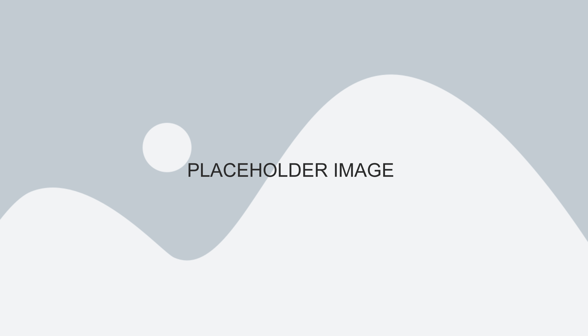

Associates in Periodontics
Orchestrated a comprehensive visual identity update for AIP (Associates in Periodontics), encompassing a full website redesign, logo development, and custom color palette. By developing all design deliverables—including a new logo, stationery suite, and multiple patient forms—a cohesive identity was established. These updates modernized the practice’s professional image and streamlined internal administrative workflows.
Web Design
UI/UX Design
Brand Identity